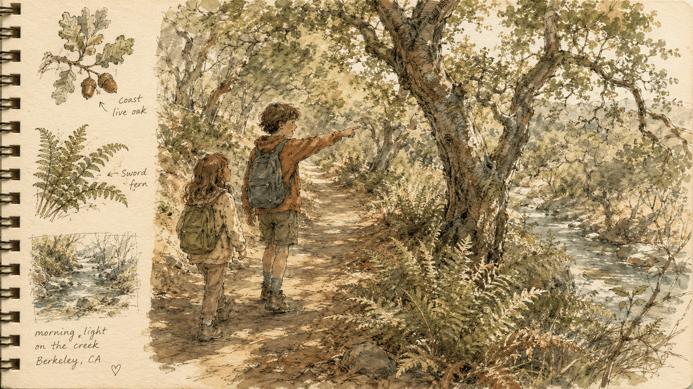

Take the Trail Together
A reading-buddy hike for Thousand Oaks families
Our Thousand Oaks → John Hinkel Park hike is even better with two kids on it. Take your child and the younger reading buddy they're paired with at school, let the big one lead the way, and make a morning of it. The whole route is already mapped out for you — you just pick a Saturday.

The Invitation
The buddy pairing is one of the warmest things that happens at Thousand Oaks — a 3rd or 4th grader matched with a younger student all year. This is an invitation to take that friendship out of the classroom and onto the trail for one easy morning.
Here's the heart of it: the older child gets to lead. They find the way, watch out for the little one, and point things out — the bend in the path, a banana slug, the Bay glinting between the houses, the sound of the waterfall up ahead. The younger buddy gets a real adventure with the big kid they already look up to. Two kids, two families, one gentle walk.
Why It's Worth a Saturday
-
Calmer, happier kids
Time outside genuinely settles children. Green space and the sound of running water improve attention, lift mood, and lower stress — for the grown-ups too.
-
A chance to lead
The older buddy is the guide, not the follower. Looking out for a younger child on a trail is real leadership, and they'll feel themselves rise to it.
-
Two families, one morning
A hike is a low-stakes, no-host way for two sets of parents to meet — walking side by side beats making small talk across a table.
-
It starts to feel like theirs
When kids explore Berkeley's parks and paths, they begin to feel the hills and trails belong to them. Our parks are free and for everyone — this is how kids come to know that in their feet.
The Route Is Already Mapped
You don't have to plan a thing. Our companion hike guide lays out the whole walk, stop by stop — from Thousand Oaks Elementary up the Indian Rock Path, past a sweeping view of the Golden Gate and the Bay, to a real rock to climb at Indian Rock Park, the Ohlone mortar stones, and the quiet waterfall at John Hinkel Park to finish. It's about 90 minutes at an easy pace, with plenty of stops.
The guide has the turn-by-turn directions, what to bring, and how many grown-ups to bring along — everything you need to lead the two buddies with confidence.
At the Waterfall, Pause to Draw
The waterfall is the hike's quiet finish — the perfect place to sit a moment. Hand each kid a sheet of paper and something to draw with, and let them sketch one thing they see: a fern, a wet stone, the falling water. The big buddy can help the little one get started. That's why paper and pencils are on the list below.

What to Bring
Keep it simple. Everything fits in one daypack:
- Water for everyone
- A snack — orange slices travel well
- A layer each — the hills run cool, even in summer
- Sturdy shoes that can handle a little dirt
- A plain sheet of paper for each kid
- A pencil, markers, or colored pencils
How to Set It Up
The whole thing comes down to one text message. Here's the literal next action:
- This week, text your buddy's parent. You already have a reason — the kids are buddies.
- Pick a Saturday morning. No need to plan far ahead; sooner is better than perfect.
- Open the hike guide and follow the route. Let the big buddy lead the way.
"Hi! [Kid] and [buddy] are buddies — want to take them on a short, gorgeous hike up to the John Hinkel Park waterfall some Saturday morning? There's a guide that maps the whole thing, and the kids would love it."
About the Club
The Berkeley Natural Explorers Club helps Berkeley kids get out into the city's parks and trails — building belonging, well-being, and a little leadership along the way. A buddy hike is one of our favorite ways to start, because the older child gets to lead and two families get to connect.
Make this the first of many. There's a whole East Bay out there — and it belongs to your kids as much as anyone's.